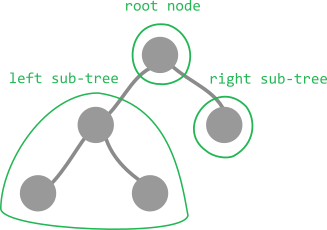

In-order, Pre-order, Post-order
In-order, pre-order, and post-order are different ways of traversing (visiting each node of) a binary tree.

In-order
- visit left sub-tree
- visit root node
- visit right sub-tree
Pre-order
- visit root node
- visit left sub-tree
- visit right sub-tree
Post-order
- visit left sub-tree
- visit right sub-tree
- visit root node
How to Memorize
One way to remember the order each type of traversal is to notice that "in", "pre", and "post" are in reference to when the root node is visited.
| in | root node in the middle |
| pre | root node first |
| post | root node last |
In all three of the above case, the left sub-tree is traversed before the right sub-tree.
Out-order
Out-order is simply the reverse of in-order:
- visit right sub-tree
- visit root node
- visit left sub-tree